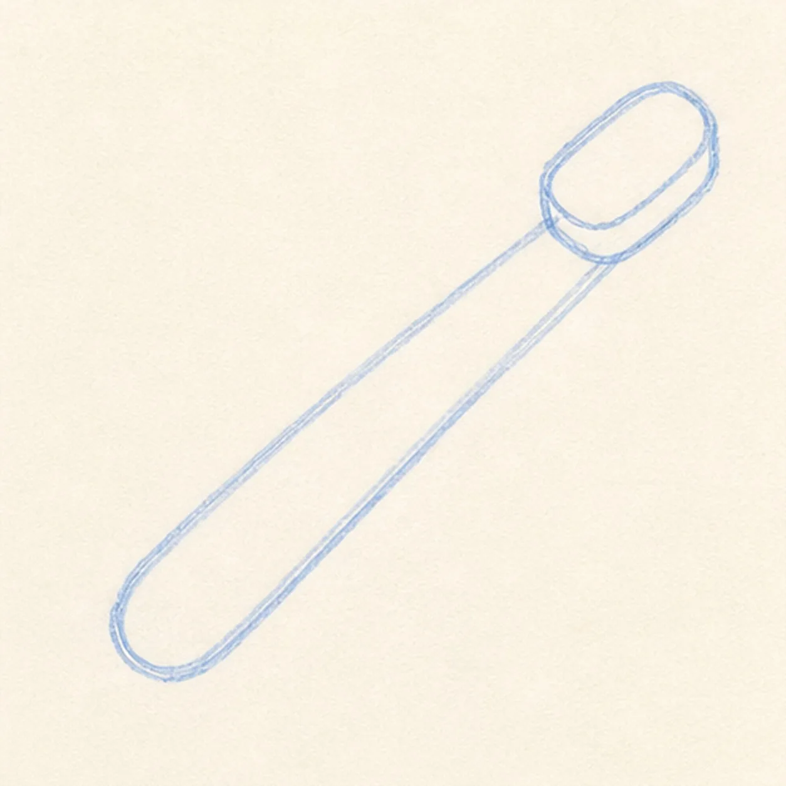
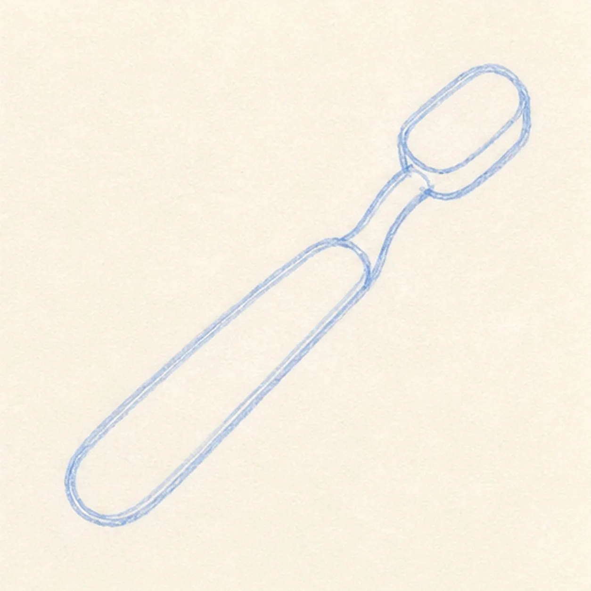
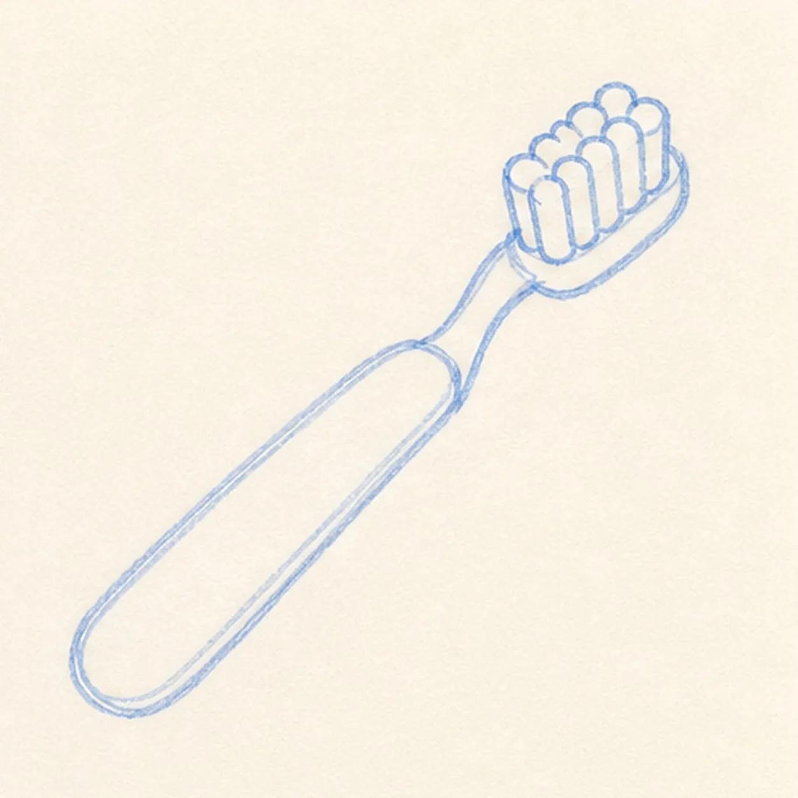
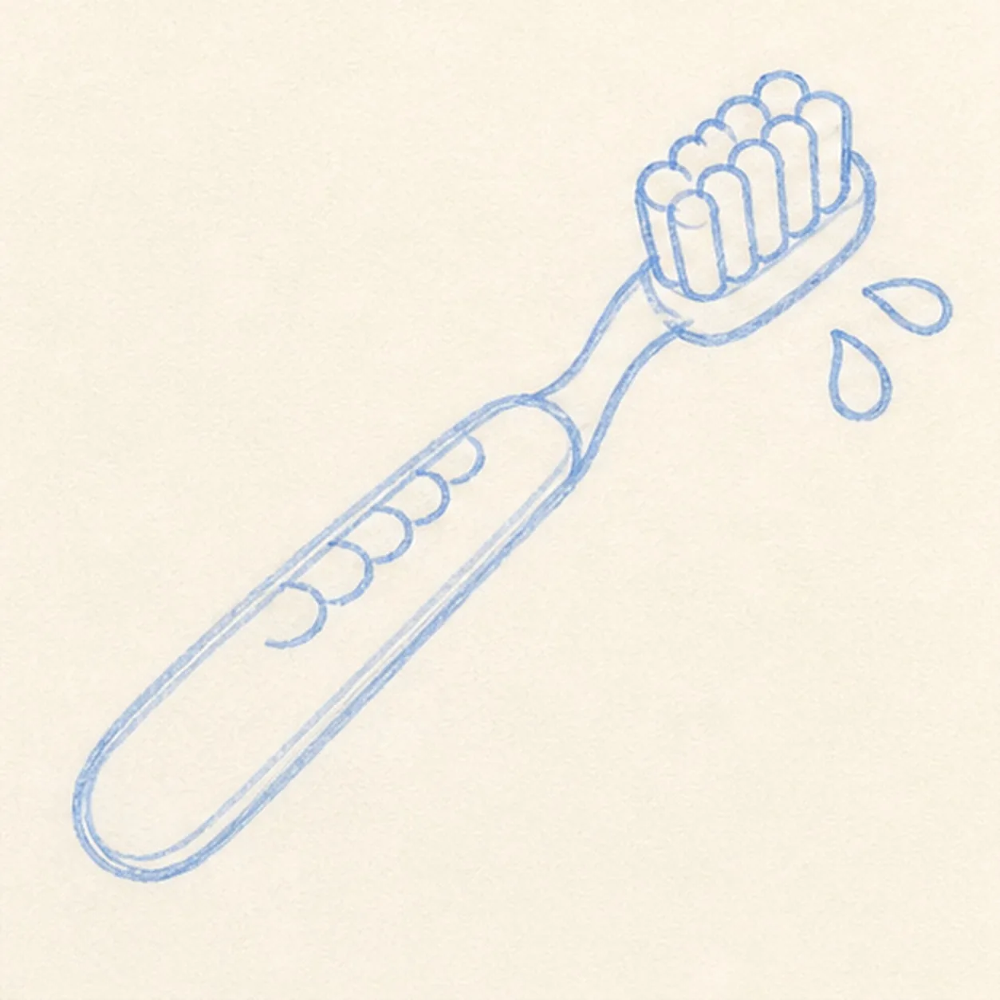
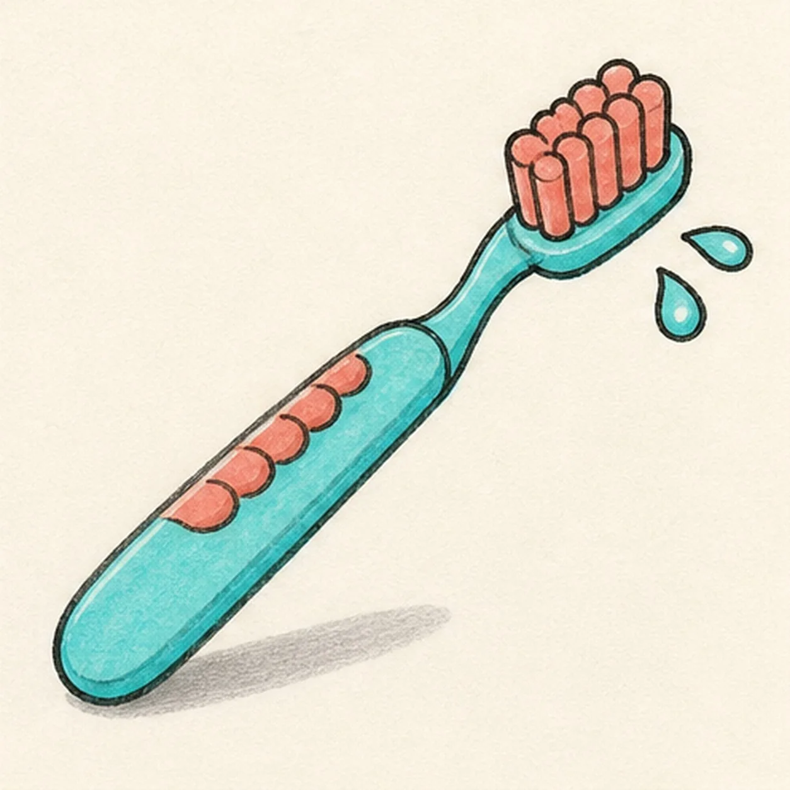

Felt-tip marker mode
Let's draw a cartoon toothbrush
Treat this as one playful practice round: sketch the idea loosely, simplify the shapes, then commit with confident marker outlines and bright fills.
-
01

Draw the handle and head
Draw a long rounded diagonal handle, then add a small rounded brush head at the top end.
Doodle tip: Ghost the long handle curve before using marker. A confident diagonal makes the whole doodle feel cleaner.
-
02

Bend the neck
Connect the handle to the head with a slight neck curve, keeping the same diagonal angle.
Doodle tip: Rotate the page so the neck curve pulls toward your hand. Smooth marker curves are easier when your wrist is not cramped.
-
03

Stack the bristles
Add grouped rounded bristle blocks on top of the brush head.
Doodle tip: Keep the bristles chunky instead of drawing many tiny hairs. Big groups read better at card size.
-
04

Add grip and droplets
Place a row of rounded grip bumps along the handle, then add a few rinse droplets near the bristles.
Doodle tip: Compare the gaps between the grip bumps. Even spacing keeps the handle playful without turning messy.
-
05

Color the toothbrush
Fill the handle and head with aqua, color the grip bumps and bristles coral, and add a small gray shadow.
Doodle tip: Pull marker strokes along the handle length. Directional streaks make the plastic form feel rounded.
-
06

Finish the toothbrush
Thicken the black outlines, even the existing marker fills, clarify the bristles, droplets, grip bumps, and same shadow.
Doodle tip: Stop before adding a face, toothpaste tube, or border. The bright handle, bristles, and droplets already carry the idea.